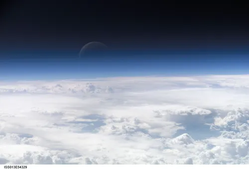

Energy
Watch this video
What does temperature measure?
Energy
The universe is made of matter and energy.
Matter and energy are related by the E = mc2 equation.
Energy can be potential or kinetic energy.
Temperature is a measure of the kinetic energy of atoms and molecules.
The kinetic energy of an object is the energy from its movement.
The potential energy of an object is the energy from its position.
pressure is from the gas molecules bouncing off the sides of its container
atmosphere(atm) is the SI unit for pressure
If pressure increases volume decreases